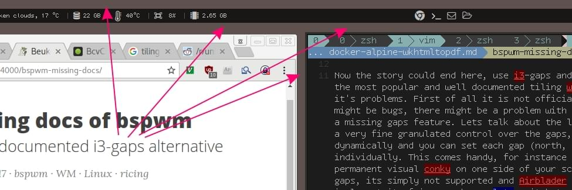
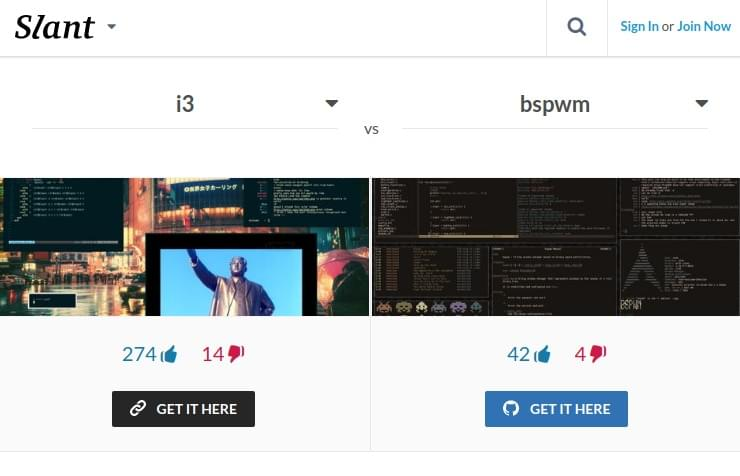
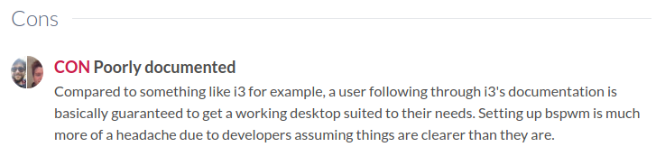

Introduction
Although this post is about bspwm, lets start with i3 and why im not using it, beside its excellent documentation. i3 is a tiling window window manager, started at as fork of wmii, written by Micheal Stapelberg1. One popular feature of most tiling window managers, are visual gaps between application windows. The main problem of users who like gaps, is that i3 is lacking the gaps feature. Is this really a thing? Well just compare the i3 repo2 (2.1 k stars) with the fork i3-gaps3 (1.3 k stars). This fork only contains the missing gaps feature. Its hard to find a comparable fork on Github, that have such a major impact on the community, just by adding a tiny feature. Another indicator is the subreddit /r/unixporn4 with 64k subscribers. Many so called nixers and ricers, that are people who customize their linux distribution, preferring the i3-gaps variant over stock i3. This leads to the simple question, why is the gaps feature not part of stock i3?

The answer to that question is equally simple. The creator and maintainer of i3 thinks that gaps are useless[citation needed]. The reason why many people think otherwise vary, some people like the visual separation of their applications, others simply like the fancy look and some have a specific use case in mind. However it seems that it is not possible to convince Michael to merge the i3-gaps fork maintained by Airblader.5
Now the story could end here, use i3-gaps and be happy with a fork of the most popular and well documented tiling wm. But i3-gaps has it’s own problems. First of all it is not official supported, so there might be bugs, there might be a problem with the gaps, there might be a missing gaps feature. Lets talk about the latter. The bspwm allows for a very fine granulated control over the gaps. They can be set dynamically and each gap (north, east, south, west) can be controlled individually. This can be useful, for instance if you want to have a permanent visual conky on one side of your screen. Not so with i3-gaps, its not supported and Airblader currently has no time to implement it, fair enough … lets switch to the second most popular tiling wm bspwm with native gaps support.
The Missing Docs
bspwm6 is a great alternative to i3-gaps, unfortunately it lacks documentation. Not only that, the commands change over time, so that every guide and documentation will become outdatet sooner or later. This leads to confusion about outdated bspwm configuration syntax, floating arround all over the Internet and forcing to constantly update the own set of config, to handle breaking changes. There is a relatively small bspwm arch linux wiki page, that describes some basic features, the projects README.md and a manpage. Having a manpage is a big plus, but is insufficient without further documentaion. The man page is there to describe the command line parameters, but there’s no introduction, no guide, no tutorial and no workflow. Airblader provides some basic config examples, but without description or context.
 
bspwm could be much more popular, if it would provide a good documentation, be it a set of markdown files, a pdf or a website. So I decided to start a simple documentation website for bswpm, that is auto generated from the few available official resources. The advantage of this approach is, that in case of changes, the documentation page can be simply regenerated and therefore always stays up to date. Here you go https://madnight.github.io/bspwm/ and here is the corresponding Github Issue.